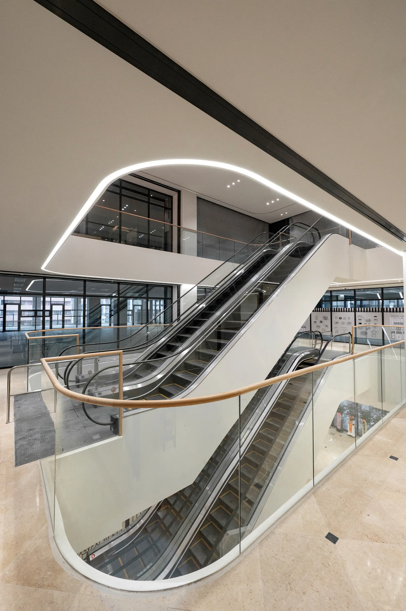
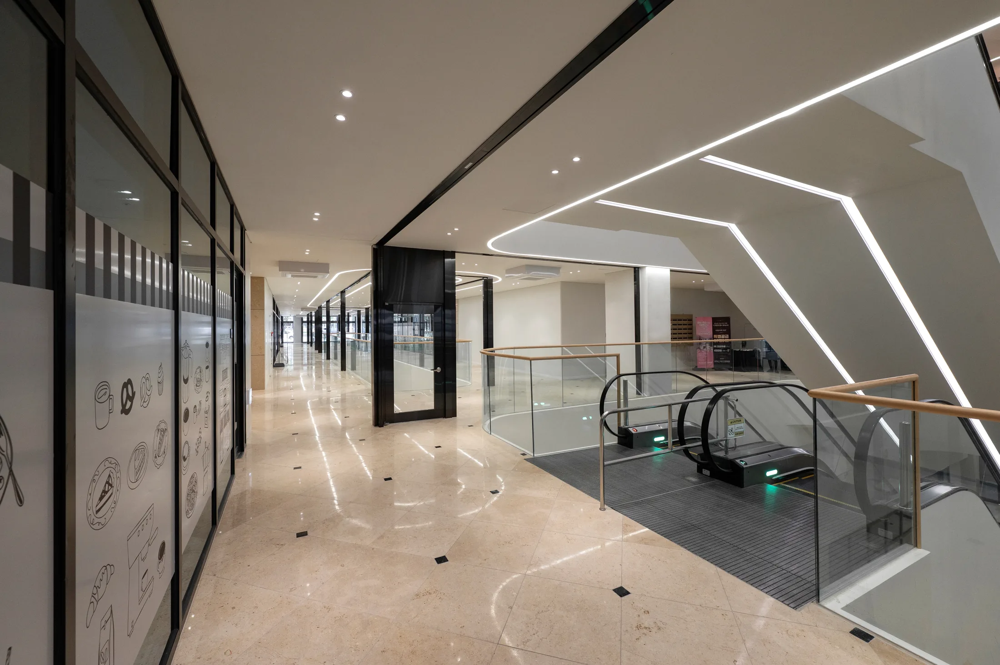

YANGJEONG 신경외과 CLINIC GUIDE
양정 신경외과 개원,
진료과 특성에 맞는 자리를 비교해보세요
양정에서 개원 자리를 찾는다면 넓은 권역보다 실제 환자가 자주 오가는 생활동선을 세밀하게 확인하는 것이 중요합니다. 신경외과는 척추·신경계 환자의 접근 편의와 검사·치료 연결이 중요한 만큼 일반 상가와 다른 기준으로 공간을 확인할 필요가 있습니다.
아틀리에933 AVENUE 933은 양정역 연결과 주거·업무·행정수요가 함께 안내된 상업공간입니다. 아래에서는 신경외과 개원을 준비할 때 실제 운영에 영향을 줄 수 있는 조건을 진료과 특성에 맞춰 정리합니다.
환자 이동 부담 먼저 확인해보세요
건물 전체의 장점과 개별 호실의 조건은 다를 수 있으므로 엘리베이터 하차 후 시야, 복도 길이, 출입문 방향을 직접 확인하는 것이 좋습니다. 양정 관점에서는 약 6만5천 세대 생활권과 평일 업무·행정수요가 어느 시간대에 움직이는지, 환자가 도보나 차량으로 다시 방문하기 편한지를 함께 살펴보는 것이 좋습니다.
양정에서 신경외과 자리를 비교한다면 환자 이동 부담을 도면과 현장에서 따로 확인해보는 것이 좋습니다. 특히 척추·신경 통증 환자와 보호자가 방문하는 상황을 가정해 접수, 대기, 진료와 귀가까지 한 번에 이어지는 동선을 그려보는 것이 좋습니다.
양정 신경외과 개원 현장 체크리스트
- 신경외과 환자가 양정역·주차장에서 호실까지 이동하기 편한지
- 진료·검사·치료 장비와 재활공간 배치 후 실사용 공간이 충분한지
- 급배수·전기·환기 등 필요한 설비 가능 범위
- 엘리베이터 하차 후 호실 가시성과 층별 안내
- 최종 계약 전 용도·공사·입점 가능 조건 재확인

진료와 검사 연결 공간계획에 반영해보세요
계약 전에 진료·검사·치료 장비와 재활공간에 필요한 전기·급배수·환기·공사 범위를 체크하면 인테리어 이후 추가 비용이나 일정 지연을 줄이는 데 도움이 됩니다. 실제 적용 가능 범위는 호실별로 재확인해야 합니다.
신경외과의 진료 특성을 생각하면 진료와 검사 연결은 호실 선택 단계에서 미리 검토할 가치가 있습니다. 특히 척추·신경 통증 환자와 보호자가 방문하는 상황을 가정해 접수, 대기, 진료와 귀가까지 한 번에 이어지는 동선을 그려보는 것이 좋습니다.

장비 반입 현장에서 비교해보세요
양정 생활권에서 척추·신경 통증 환자와 보호자가 어느 시간대에 방문할 가능성이 높은지 함께 생각하면 층과 호실의 적합성을 더 현실적으로 판단할 수 있습니다. 실제 분양·임대 조건은 최신 안내자료를 기준으로 확인하는 것이 좋습니다.
같은 면적의 상가라도 장비 반입을 어떻게 구성할 수 있는지에 따라 신경외과 운영 편의는 달라질 수 있습니다. 특히 척추·신경 통증 환자와 보호자가 방문하는 상황을 가정해 접수, 대기, 진료와 귀가까지 한 번에 이어지는 동선을 그려보는 것이 좋습니다.

조용한 대기환경 먼저 확인해보세요
진료·검사·치료 장비와 재활공간을 실제로 배치했을 때 통로 폭과 대기공간이 충분히 남는지 확인해보세요. 양정 관점에서는 약 6만5천 세대 생활권과 평일 업무·행정수요가 어느 시간대에 움직이는지, 환자가 도보나 차량으로 다시 방문하기 편한지를 함께 살펴보는 것이 좋습니다.
신경외과 개원을 준비할 때 조용한 대기환경은 단순한 인테리어 요소보다 실제 환자 경험과 운영 효율에 영향을 줄 수 있습니다. 특히 척추·신경 통증 환자와 보호자가 방문하는 상황을 가정해 접수, 대기, 진료와 귀가까지 한 번에 이어지는 동선을 그려보는 것이 좋습니다.

재활공간 확장 공간계획에 반영해보세요
건물 전체의 장점과 개별 호실의 조건은 다를 수 있으므로 엘리베이터 하차 후 시야, 복도 길이, 출입문 방향을 직접 확인하는 것이 좋습니다. 양정 관점에서는 약 6만5천 세대 생활권과 평일 업무·행정수요가 어느 시간대에 움직이는지, 환자가 도보나 차량으로 다시 방문하기 편한지를 함께 살펴보는 것이 좋습니다.
양정에서 신경외과 자리를 비교한다면 재활공간 확장을 도면과 현장에서 따로 확인해보는 것이 좋습니다. 특히 척추·신경 통증 환자와 보호자가 방문하는 상황을 가정해 접수, 대기, 진료와 귀가까지 한 번에 이어지는 동선을 그려보는 것이 좋습니다.
보호자 동반 현장에서 비교해보세요
계약 전에 진료·검사·치료 장비와 재활공간에 필요한 전기·급배수·환기·공사 범위를 체크하면 인테리어 이후 추가 비용이나 일정 지연을 줄이는 데 도움이 됩니다. 실제 적용 가능 범위는 호실별로 재확인해야 합니다.
신경외과의 진료 특성을 생각하면 보호자 동반은 호실 선택 단계에서 미리 검토할 가치가 있습니다. 특히 척추·신경 통증 환자와 보호자가 방문하는 상황을 가정해 접수, 대기, 진료와 귀가까지 한 번에 이어지는 동선을 그려보는 것이 좋습니다.
양정 신경외과 개원 현장 체크리스트
- 신경외과 환자가 양정역·주차장에서 호실까지 이동하기 편한지
- 진료·검사·치료 장비와 재활공간 배치 후 실사용 공간이 충분한지
- 급배수·전기·환기 등 필요한 설비 가능 범위
- 엘리베이터 하차 후 호실 가시성과 층별 안내
- 최종 계약 전 용도·공사·입점 가능 조건 재확인
직장인 진료시간 먼저 확인해보세요
양정 생활권에서 척추·신경 통증 환자와 보호자가 어느 시간대에 방문할 가능성이 높은지 함께 생각하면 층과 호실의 적합성을 더 현실적으로 판단할 수 있습니다. 실제 분양·임대 조건은 최신 안내자료를 기준으로 확인하는 것이 좋습니다.
같은 면적의 상가라도 직장인 진료시간을 어떻게 구성할 수 있는지에 따라 신경외과 운영 편의는 달라질 수 있습니다. 특히 척추·신경 통증 환자와 보호자가 방문하는 상황을 가정해 접수, 대기, 진료와 귀가까지 한 번에 이어지는 동선을 그려보는 것이 좋습니다.
치료실 수납 공간계획에 반영해보세요
진료·검사·치료 장비와 재활공간을 실제로 배치했을 때 통로 폭과 대기공간이 충분히 남는지 확인해보세요. 양정 관점에서는 약 6만5천 세대 생활권과 평일 업무·행정수요가 어느 시간대에 움직이는지, 환자가 도보나 차량으로 다시 방문하기 편한지를 함께 살펴보는 것이 좋습니다.
신경외과 개원을 준비할 때 치료실 수납은 단순한 인테리어 요소보다 실제 환자 경험과 운영 효율에 영향을 줄 수 있습니다. 특히 척추·신경 통증 환자와 보호자가 방문하는 상황을 가정해 접수, 대기, 진료와 귀가까지 한 번에 이어지는 동선을 그려보는 것이 좋습니다.
양정 신경외과 개원 자주 묻는 질문
양정 신경외과 상가 개원 자리 입지 애비뉴933을 검토하면서 자주 확인하는 내용을 환자 접근, 공간, 설비와 실제 운영 관점에서 정리했습니다.
양정에서 신경외과 개원 자리를 볼 때 가장 먼저 무엇을 확인해야 하나요?
신경외과의 주요 환자층과 방문 방식을 먼저 정리한 뒤 대중교통·주차 접근성, 내부 동선, 필요한 실과 설비를 순서대로 비교하는 것이 좋습니다. 양정 안에서도 층과 호실에 따라 체감 조건이 달라질 수 있습니다.
양정 신경외과 상가는 1층이 가장 좋은가요?
반드시 그렇지는 않습니다. 신경외과는 목적형 방문 비중이 높을 수 있어 상층부라도 엘리베이터 접근과 안내가 좋다면 검토할 수 있습니다. 실제 적합성은 환자층과 운영방식에 따라 달라집니다.
애비뉴933에서 신경외과 개원을 검토할 때 주차는 어떻게 봐야 하나요?
변동될 수 있는 숫자보다 차량 진입, 주차 후 엘리베이터 접근, 호실까지의 이동 과정이 편리한지를 확인하는 것이 좋습니다. 특히 척추·신경 통증 환자와 보호자의 이동 특성을 고려해 현장에서 직접 걸어보는 것이 도움이 됩니다.
양정 신경외과 개원에서 호실 면적은 어느 정도가 적당한가요?
정해진 한 가지 면적은 없습니다. 진료·검사·치료 장비와 재활공간, 대기공간, 직원공간과 향후 확장계획을 기준으로 실제 배치를 해본 뒤 필요한 전용면적을 판단하는 것이 좋습니다.
신경외과 개원 전에 급배수·전기 조건도 확인해야 하나요?
진료 범위와 장비에 따라 필요한 설비가 달라질 수 있으므로 확인하는 것이 좋습니다. 계약 전에 예정된 장비와 실 구성을 기준으로 급배수, 전기, 환기, 공사 가능 범위를 개별 확인해야 합니다.
양정역과 연결되는 점이 신경외과 개원에 어떤 의미가 있나요?
환자가 대중교통으로 방문할 때 이동 경로를 단순하게 만들 수 있다는 점을 검토할 수 있습니다. 다만 연결부와 개별 호실 사이 거리, 층간 이동과 안내 사인을 실제로 확인해야 체감 접근성을 판단할 수 있습니다.
양정 신경외과 개원 시 배후수요는 어떻게 확인하는 것이 좋나요?
주거세대 숫자만 보기보다 척추·신경 통증 환자와 보호자가 실제로 생활하거나 일하는 범위와 반복 방문 가능성을 함께 살펴보는 것이 좋습니다. 양정의 주거·업무·행정수요가 어느 시간대에 움직이는지도 참고할 수 있습니다.
현재 신경외과 입점 가능한 호실과 조건은 어디서 확인하나요?
가능 호실과 면적, 분양·임대 조건, 설비와 개설 가능 여부는 시점과 호실에 따라 달라질 수 있습니다. 신경외과의 진료계획과 필요한 면적을 기준으로 최신 조건을 개별 상담을 통해 확인하는 것이 정확합니다.
양정 신경외과 개원
호실별 조건을 비교해보세요.
- 신경외과 개원 가능 호실 안내
- 진료·대기·검사공간 배치 비교
- 필요 설비와 환자 이동 동선 상담